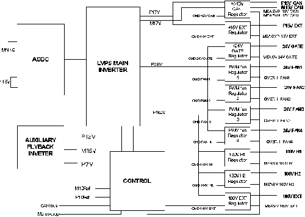

Operating Documentation
Direction 5193755-800, Rev# 8
BrightSpeed (Ltd. Access) Service Methods - Adv
Operating Documentation |
The LVPS400 board is designed to supply the various circuits of the JEDI generator with the required low voltages. The board communicates with JEDI generator by the mean of a CAN bus and one real time line (MAINS_DROP). It is intended to be connected to a fuse protected 230V RMS Mains. It has 11 specific outputs:
P15VCAN and M15VCAN to supply mainly the PPC board and the low voltage parts of HEATER boards and ROTATION board.
P15V EXT intended to supply mainly the CT IF Board on Jedi 60DC.
24V GATE to supply the Gate control board of JEDI main inverter (not used on Jedi60DC).
Four specific outputs (24V FANx) intended to connect fans. Each output can drive two fans connected in parallel, so depending on the considered system, up to eight fans can be used. Each output voltage is programmable by firmware (not used on Jedi60DC).
Two outputs 160 V H1 and 160V H2 designed to supply two different HEATER boards for XL and XS filament (if required). In case of Jedi60DC, only 1 Heater Board.
160V EXT to supply the INGRID tank power circuits (not used on Jedi60DC).
The board monitors the output voltage and current. Depending on the values, it may generate warnings, which are sent to the kV control board, but the exposure is not interrupted.
Illustration 1: JEDI Generator / LVPS400 Block Diagram

| NOTE: | For a larger version of the above illustration, click on the pdf icon below: |
Media File 1: JEDI Generator / LVPS400 Block Diagram

Circuits description:
The LVPS400 board is constituted by:
A rectifier stage
An auxiliary flyback inverter which provides three specific voltages P15V, M15V and P7V intended to supply the control and regulation circuits on the board
A main regulated inverter with four separate outputs : P17V, M17V, P26V, and P160V
Eleven separate regulators with individual ON/OFF function controlled by the LVPS micro controller
A control circuit
This stage is composed by an EMI filter (L1, C19, C12), a rectifier bridge U10 and a tank capacitor formed by C34,C43,C47,C36. The CTN U11 and U15 are used to limit the inrush current. For 115VRMS operation, pins 1 and 2 of J2 connector must be externally connected. A voltage doubler stage is formed by two diodes of U10 and the capacitors C34 and C43 on one side , and the capacitors C36 and C47 on the other side. The neon lamp DS8 lights as long as the capacitors C34, C43, C47, C36 are not completely discharged.
The Mains AC input is monitored by the two signals LINE1 and LINE2. The needed isolation is made by opto couplers U16. The DC signal, at the output of the rectification stage CR112 and CR113, is applied to the comparator U14 which provides the signal _LINE ON to the micro controller (needed data to generate MAINS_DROP to the JEDI generator and allow a preventive data back up when the ac input voltage disappears).
It is a stand-by power supply which delivers the internal voltages needed on the LVPS400 board. The inverter is supplied from the DC bus and protected by an internal fuse. The inverter is made with an integrated flyback driverU101, a switch Q16 and the transformer T1. The T1 secondary voltages are rectified by the diodes CR24, CR128 and CR25.
Power stage
The switches Q7 and Q12, the inductance L9 and the capacitors C52 and C53 are the main parts of a resonant inverter working above the resonant frequency of about 20kHz. The transformer T2 provide the needed isolation and with its four secondary windings it can deliver after rectification, the voltages P17V, M17V, P26V, P160V. The input lines of the gate switch drivers U19 are isolated by opto couplers U20. The main inverter can be disabled by the LVPS micro controller with the INV_ON signal (state 1 = inverter enable)
Control and feedback circuit
The switch control signals _CMD_INV_H and _CMD_INV_L are derived from a sawtooth generator and the two comparators U17 and U18. The sawtooth generator is set up with the integrator U2 (1,2,3) and the comparator U2 (8,9,10) which drives a diodes switch CR102 to commute the voltage of CR3 or CR4. The comparison level of U2 comparator is issued by the output 7 or 14 of U2 depending on the sawtooth polarity (diodes switch CR1). We obtain in this way a voltage /period generator. This control voltage is derived from an inverter current measurement and a signal _CONS_I_INV (output 14 of U5) calculated from error voltage.
The error signal is calculated from the reference voltage P10REF and the lowest voltage among P160V, P26V and P17V (in respect to their nominal value) by the amplifiers U5 and U13 an the diodes switches CR7 and CR8.
When we start the inverter the signal _INV_ON has a transition from 1 to 0, Q3 is OFF and the feedback reference voltage (On the Q3 drain) rise at a rate depending on R151 , C10, C11 and C118, followed by the inverter output voltages.
P15V, M15V, 15V EXT, 24V GATE regulators -
These four linear regulators are the same type. They show only a slight difference in component choice to take into account the various output power. The P15V CAN regulator, for example includes:
A ballast transistor Q13
A driver stage Q123, Q124
An error amplifier U13 which compare the output voltage to the reference voltage M10REF
An enable/disable circuit Q117, Q5 with a rising voltage ramp R28, C23
A LED DS7 shows when the P15V CAN supply is ON . An image of the output voltage is sent to the micro controller to measurement MEAS_V_P15_CAN
160V H1, 160V H2, 160V EXT regulators -
These three linear regulators are the same type as the previous one but in this case the error amplifier and driver stage are made with a two differential transistors stage Q132 and Q133 for 160V H1 output.
24V FAN1, 24V FAN2, 24V FAN3, 24V FAN4 regulators -
These four regulators consist in a pulse width modulation switching stage. So each output can be adjusted to the right value by the firmware.(taking into account the temperature measurements). The PWM signal is delivered by the micro controller. For the 24V FAN1 the switch is made by Q13 and the MOS Q108, the output smoothing filter L5, C8, C114. An over current detection is provided with the shunt R102 and the comparator U8 (_OVER_I_FAN1).
The control of LVPS400 board is made by the micro controller U7 which manages the CAN bus using a transceiver CAN U1. A specialized circuit U6 resets the micro controller at power on. A red LED DS5 lights when the micro controller is in reset state. The two LED DS3 and DS4 blink alternatively in normal operation.
An integrated voltage reference circuit U12 and the amplifiers U9 generate the two needed reference voltage P10REF and M10REF.